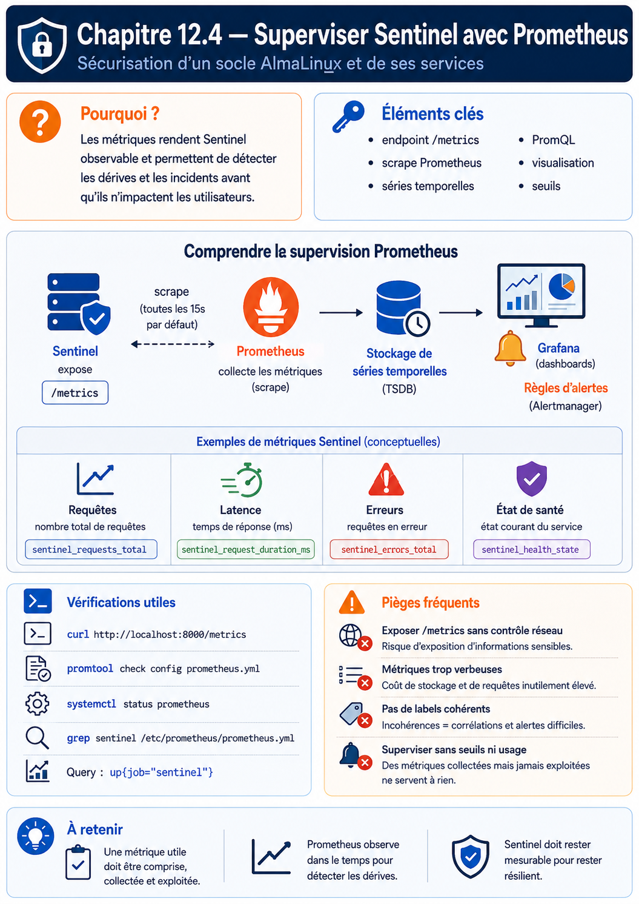

Chapitre 12.4 — Superviser Sentinel avec Prometheus
Campagne 12 — Supervision et audit
« Un service n'est pas sain parce que son processus existe ; il est sain lorsqu'il rend le service attendu dans des limites acceptables. »
Vous êtes ici
PARTIE II — Industrialiser la sécurité
Campagne 12
12.1 Centraliser les journaux avec Rsyslog ✔
12.2 Auditer le système avec auditd ✔
12.3 Contrôler l'intégrité des fichiers avec AIDE ✔
► 12.4 Superviser Sentinel avec Prometheus
12.5 Concevoir des alertes avec Alertmanager
12.6 Construire le tableau de bord Sentinel
Objectifs pédagogiques
À l'issue de ce chapitre, vous serez capable de :
- distinguer disponibilité du processus, santé technique et service rendu ;
- expliquer le modèle pull, les cibles, les scrapes et les séries temporelles Prometheus ;
- choisir compteurs, jauges et histogrammes adaptés à Sentinel ;
- maîtriser les labels et prévenir l'explosion de cardinalité ;
- collecter les métriques de l'hôte avec Node Exporter ;
- sécuriser et valider une cible de collecte ;
- écrire des requêtes PromQL et des recording rules utiles à l'exploitation.
Pourquoi ce chapitre existe
Les journaux et l'audit décrivent des événements précis. Ils sont indispensables pour comprendre, mais peu pratiques pour répondre rapidement à « le taux d'erreurs augmente-t-il ? », « combien d'espace reste-t-il ? » ou « depuis combien de temps Sentinel est-il indisponible ? ».
Prometheus stocke des valeurs horodatées identifiées par un nom de métrique et des labels. Il interroge périodiquement des endpoints HTTP et permet de calculer des taux, ratios et quantiles. Cette vision temporelle complète les preuves des chapitres précédents sans les remplacer.
De la présence au service rendu
Une supervision utile combine plusieurs profondeurs :
| Niveau | Question | Exemple |
|---|---|---|
| processus | l'unité tourne-t-elle ? | systemctl is-active sentinel |
| port | une socket écoute-t-elle ? | ss -lnt |
| santé | l'application répond-elle ? | GET /health |
| dépendance | les composants nécessaires répondent-ils ? | PKI, stockage, identité |
| service | un utilisateur obtient-il le résultat attendu ? | transaction synthétique |
| expérience | latence et erreurs restent-elles acceptables ? | p95 et taux 5xx |
Un service peut avoir un PID et refuser toutes les requêtes. À l'inverse, une sonde trop profonde peut déclarer Sentinel indisponible à cause d'une dépendance secondaire. Définissez séparément :
- liveness : le processus peut-il continuer ou faut-il le redémarrer ? ;
- readiness : peut-il recevoir du trafic maintenant ? ;
- transaction synthétique : le chemin critique fonctionne-t-il de l'extérieur ?.
Comprendre le modèle Prometheus
Prometheus utilise principalement un modèle pull : le serveur vient lire périodiquement les endpoints /metrics. Chaque lecture est un scrape. Les cibles sont regroupées en jobs.
Prometheus ajoute notamment les labels job et instance. La métrique synthétique up vaut 1 lorsque le scrape réussit et 0 lorsqu'il échoue. Elle prouve l'accessibilité de l'endpoint de métriques, pas le bon fonctionnement métier complet.
Série, échantillon et label
sentinel_http_requests_total{method="GET",route="/health",code="200"} 1842
Le nom et l'ensemble exact de labels identifient une série. Changer une valeur de label crée une autre série. Les échantillons successifs donnent l'évolution de cette série.
💎 Le point d'expertise — Chaque label a un coût multiplicatif
Un label
user_id, une URL complète, un identifiant de requête ou une adresse IP non bornée peut créer une série par valeur. Ces dimensions appartiennent aux journaux ou aux traces. Les métriques utilisent des catégories bornées : méthode, route normalisée, classe de code et instance.
Choisir les types de métriques
| Type | Comportement | Exemple Sentinel | Fonction PromQL |
|---|---|---|---|
| compteur | augmente, sauf redémarrage | requêtes, erreurs, octets | rate(), increase() |
| jauge | monte et descend | requêtes en cours, taille de file | valeur, max_over_time() |
| histogramme | compte des observations par buckets | durée des requêtes | histogram_quantile() |
| info | valeur constante avec labels bornés | version et révision | égalité, jointure prudente |
Un compteur porte le suffixe _total. Une durée utilise l'unité de base seconde et le suffixe _seconds. Une taille utilise _bytes. Un ratio est exporté entre 0 et 1 ou calculé à la requête.
Contrat minimal Sentinel
| Métrique | Type | Utilité |
|---|---|---|
sentinel_build_info{version,revision} |
gauge info | version réellement servie |
sentinel_http_requests_total{method,route,code} |
compteur | trafic et erreurs |
sentinel_http_request_duration_seconds |
histogramme | distribution de latence |
sentinel_http_requests_in_flight |
jauge | concurrence instantanée |
sentinel_dependency_up{name} |
jauge | dépendances bornées |
sentinel_last_success_unixtime |
jauge | date de la dernière opération réussie |
Le nom de compte, le jeton, le chemin de fichier demandé et l'exception complète ne sont pas des labels. Ils restent dans les journaux structurés corrélés par un identifiant de requête.
Architecture du laboratoire
Le serveur Prometheus partage l'hôte d'observabilité, mais écoute seulement sur la boucle locale ou le réseau d'administration. Node Exporter écoute sur l'adresse de supervision de l'hôte Sentinel et le pare-feu n'autorise que Prometheus. Les métriques applicatives passent par le point d'entrée TLS contrôlé.
Règle de sécurité
Les endpoints Prometheus exposent des informations sur le système et peuvent être coûteux à interroger. Ils ne doivent pas être publiés sur Internet. Restreignez réseau, pare-feu, authentification et capacité de requête selon le modèle de menace.
Préparer les artefacts sans contourner la chaîne de confiance
Prometheus et Node Exporter ne sont pas supposés provenir d'un curl | sh. Le laboratoire fournit des artefacts officiels dont l'empreinte a été vérifiée, puis des RPM internes construits selon la campagne 10. Le manifeste de livraison contient :
prometheus-VERSION-RELEASE.arch.rpm
node_exporter-VERSION-RELEASE.arch.rpm
SHA256SUMS
provenance.txt
Vérifiez avant installation :
sha256sum -c SHA256SUMS
rpm -K prometheus-*.rpm node_exporter-*.rpm
sudo dnf install ./node_exporter-*.rpm
Si votre organisation utilise un dépôt interne signé, préférez dnf install node_exporter depuis ce dépôt. La version précise est un paramètre de plateforme ; les commandes doivent être confrontées à --help et aux unités réellement livrées.
Déployer Node Exporter
Node Exporter expose les métriques Linux : CPU, mémoire, systèmes de fichiers, réseau et plusieurs statistiques noyau. Il ne connaît pas la santé métier de Sentinel.
Inspectez l'unité avant de modifier ses options :
sudo systemctl cat node_exporter
node_exporter --help | less
Configurez une écoute sur l'adresse de supervision, par exemple :
--web.listen-address=192.0.2.10:9100
--collector.textfile.directory=/var/lib/node_exporter/textfile
Le mécanisme exact — fichier /etc/sysconfig, argument d'unité ou drop-in — dépend du RPM interne. Utilisez un drop-in plutôt que d'éditer /usr/lib/systemd/system/node_exporter.service.
Restreignez le flux :
sudo firewall-cmd --permanent --zone=internal \
--add-rich-rule='rule family="ipv4" source address="192.0.2.20/32" port port="9100" protocol="tcp" accept'
sudo firewall-cmd --reload
sudo systemctl enable --now node_exporter
sudo ss -lntp | grep ':9100'
Depuis Prometheus :
curl --fail --silent http://192.0.2.10:9100/metrics | head
Depuis Kali, le même port doit être filtré ou refusé.
Configurer les scrapes Prometheus
Sur observability.sentinel.lab, créez une configuration contrôlée :
global:
scrape_interval: 15s
evaluation_interval: 15s
rule_files:
- /etc/prometheus/rules/*.yml
scrape_configs:
- job_name: node
static_configs:
- targets:
- 192.0.2.10:9100
labels:
environment: lab
service: sentinel
- job_name: sentinel
scheme: https
metrics_path: /metrics
tls_config:
ca_file: /etc/prometheus/pki/ca.crt
cert_file: /etc/prometheus/pki/prometheus.crt
key_file: /etc/prometheus/pki/prometheus.key
server_name: sentinel.sentinel.lab
static_configs:
- targets:
- sentinel.sentinel.lab:443
labels:
environment: lab
Les labels statiques décrivent des dimensions stables. Ne recopiez pas des secrets dans le YAML. Les fichiers de clé ont des permissions minimales et sont lisibles par le compte Prometheus.
Validez avant rechargement :
sudo -u prometheus promtool check config /etc/prometheus/prometheus.yml
sudo systemctl reload prometheus
sudo journalctl -u prometheus -n 50 --no-pager
Si l'unité n'implémente pas reload, utilisez le mécanisme documenté par le RPM : signal SIGHUP ou endpoint /-/reload uniquement lorsqu'il est explicitement activé et protégé.
Interroger avec PromQL
Disponibilité du scrape
up{job="sentinel"}
Utilisation CPU hors idle
1 - avg by (instance) (
rate(node_cpu_seconds_total{job="node",mode="idle"}[5m])
)
Mémoire disponible
1 - (
node_memory_MemAvailable_bytes{job="node"}
/
node_memory_MemTotal_bytes{job="node"}
)
Espace disponible sur les systèmes de fichiers
node_filesystem_avail_bytes{
job="node",
fstype!~"tmpfs|overlay",
mountpoint!~"/run.*"
}
/
node_filesystem_size_bytes{
job="node",
fstype!~"tmpfs|overlay",
mountpoint!~"/run.*"
}
Taux de requêtes Sentinel
sum by (code) (
rate(sentinel_http_requests_total[5m])
)
Latence p95
histogram_quantile(
0.95,
sum by (le) (
rate(sentinel_http_request_duration_seconds_bucket[5m])
)
)
Le p95 agrégé n'est correct que si les buckets sont compatibles. Il signifie que 95 % des observations de la fenêtre se situent sous la valeur estimée, pas que chaque utilisateur a obtenu cette latence.
Enregistrer les requêtes récurrentes
Créez /etc/prometheus/rules/sentinel-recording.yml :
groups:
- name: sentinel.recording
interval: 30s
rules:
- record: job:sentinel_http_requests:rate5m
expr: sum(rate(sentinel_http_requests_total[5m]))
- record: job:sentinel_http_errors:ratio_rate5m
expr: |
sum(rate(sentinel_http_requests_total{code=~"5.."}[5m]))
/
clamp_min(sum(rate(sentinel_http_requests_total[5m])), 1e-9)
- record: job:sentinel_http_request_duration_seconds:p95_rate5m
expr: |
histogram_quantile(
0.95,
sum by (le) (
rate(sentinel_http_request_duration_seconds_bucket[5m])
)
)
Validez :
sudo -u prometheus promtool check rules \
/etc/prometheus/rules/sentinel-recording.yml
Les recording rules réduisent le coût des dashboards et donnent un nom partagé aux indicateurs. Elles ne corrigent pas une mauvaise métrique source.
Jalon Sentinel — version 1.1.0
La version 1.0.0 a stabilisé l'interface et le paquet RPM. La campagne 11 a placé exactement ce même programme dans une image : changer le mode de livraison ne justifiait pas une nouvelle version applicative. Ici, le contrat évolue réellement. Sentinel 1.1.0 ajoute GET /metrics et les mesures sont produites par le traitement des requêtes, pas écrites à la main dans un fichier de démonstration.
Le checkpoint de référence se trouve dans sentinel/labs/sentinel-app/checkpoints/1.1.0/. Il conserve /health, /ready, /api/v1/status, le mTLS et l'autorisation par identité DNS, puis ajoute :
sentinel_build_info{version,revision}pour relier l'exécution au code construit ;- un compteur par route normalisée et code HTTP ;
- une jauge des requêtes en cours ;
- un histogramme de durée avec des buckets fixes ;
- l'état borné de la dépendance
stateet la date du dernier diagnostic réussi.
Le nouveau module metrics.py contient le registre, les buckets, l'échappement des labels et le rendu Prometheus. web.py chronomètre les requêtes et transmet seulement une route normalisée. Les modules hérités — tls_support.py, identity.py, runtime.py et state.py — restent inchangés dans leur rôle. Ce découpage permet d'auditer le budget de cardinalité sans relire toute l'application.
La route inconnue est volontairement étiquetée route="unknown". Une requête vers /users/alice ne crée donc ni label alice, ni label contenant l'URL complète ou l'adresse du client.
Exécutez d'abord la qualification hors réseau :
cd sentinel/labs/sentinel-app/checkpoints/1.1.0
python3 -m unittest discover -s tests -v
python3 src/sentinel.py --config config/sentinel.conf --check-config
Le paquet RPM et l'image OCI de 1.1.0 doivent provenir du même commit. Injectez sa révision à la construction ou au lancement avec SENTINEL_REVISION, puis vérifiez la valeur réellement exposée par sentinel_build_info. La version de l'image et son digest restent des identifiants de livraison distincts de la version applicative.
Prometheus reçoit un certificat client dédié dont le SAN DNS figure dans allowed_dns_names. L'accès à /metrics suit ainsi la même authentification mTLS et la même autorisation applicative que les autres routes : posséder un certificat signé par l'autorité ne suffit pas si son identité n'est pas autorisée.
curl --fail --silent --show-error \
--cert prometheus.crt --key prometheus.key --cacert ca.crt \
https://sentinel.sentinel.lab/metrics | \
promtool check metrics
Testez également un certificat valide mais non autorisé, puis une connexion sans certificat. Les échecs attendus sont différents : HTTP 403 après authentification dans le premier cas, échec de la négociation TLS dans le second.
TP 1 — Qualifier Node Exporter
- Installez le RPM interne signé.
- Liez l'écoute à l'adresse de supervision.
- Autorisez uniquement Prometheus dans Firewalld.
- Vérifiez la cible depuis Prometheus.
- Testez l'interdiction depuis Kali.
Collectez comme preuves :
rpm -qi node_exporter
systemctl cat node_exporter
systemctl status node_exporter --no-pager
ss -lntp | grep ':9100'
firewall-cmd --list-all
Relevez une métrique CPU, mémoire, disque et réseau. Expliquez pourquoi leur présence ne prouve pas que Sentinel répond.
TP 2 — Qualifier Sentinel 1.1.0
Construisez ou déployez le checkpoint 1.1.0. Notez le commit source, le NEVRA du RPM ou le digest de l'image, puis :
curl --fail --silent --cert prometheus.crt --key prometheus.key \
--cacert ca.crt https://sentinel.sentinel.lab/metrics | \
grep '^sentinel_'
Générez un trafic borné sur /health et un endpoint volontairement invalide. Vérifiez :
- l'augmentation du compteur de requêtes ;
- la présence des classes de statut attendues ;
- l'histogramme de durée ;
- l'absence d'identifiant de requête ou d'utilisateur dans les labels ;
- la stabilité du nombre de séries avant et après le test.
Comparez count({__name__=~"sentinel_.+"}) avant et après. Une croissance permanente après un petit jeu d'utilisateurs révèle probablement une cardinalité non bornée.
Relevez enfin sentinel_build_info et démontrez que la révision exposée correspond à l'artefact déployé. Cette preuve évite de diagnostiquer un binaire différent de celui que le dépôt laisse supposer.
TP 3 — Simuler une indisponibilité
Dans la fenêtre de maintenance du laboratoire :
sudo systemctl stop sentinel
Observez up{job="sentinel"}, puis distinguez trois moments :
- dernière collecte réussie ;
- premier scrape en échec ;
- retour à
1après redémarrage.
sudo systemctl start sentinel
Recherchez en parallèle les journaux centraux et Audit. Produisez une chronologie expliquant la différence entre « endpoint de métriques inaccessible » et « service métier indisponible ».
Le textfile collector
Node Exporter peut lire des fichiers .prom produits atomiquement par des tâches locales. C'est utile pour la date de la dernière sauvegarde ou du dernier contrôle AIDE validé.
sentinel_aide_last_check_unixtime 1784505600
sentinel_aide_last_check_changes 0
Écrivez d'abord dans un fichier temporaire situé sur le même système de fichiers, puis renommez-le vers le répertoire textfile. N'exposez ni chemin sensible, ni nom d'utilisateur. Une tâche bloquée doit exporter la date du dernier succès, pas un trompeur « temps écoulé » recalculé localement.
Mission d'ingénieur — Définir la stratégie de supervision
Pour Sentinel et son hôte, construisez une matrice :
| Besoin | Métrique ou sonde | Requête | Seuil envisagé | Action |
|---|---|---|---|---|
| disponibilité | à définir | à définir | à définir | à définir |
| erreurs | à définir | à définir | à définir | à définir |
| latence | à définir | à définir | à définir | à définir |
| saturation disque | à définir | à définir | à définir | à définir |
| contrôle AIDE ancien | à définir | à définir | à définir | à définir |
Le dossier contient aussi :
- le commit du checkpoint
1.1.0et les résultats de ses tests ; - le schéma de flux ;
- la provenance du RPM ou de l'image et la concordance de
sentinel_build_info; - la configuration validée par
promtool; - le budget de cardinalité ;
- un refus mTLS, un refus d'identité, un test de panne et un test de retour ;
- les limites connues, notamment la différence entre
upet service rendu.
Impact sur Sentinel
Sentinel expose désormais un contrat quantitatif : trafic, erreurs, latence, concurrence, version et dépendances. L'hôte publie ses ressources sans ouvrir Node Exporter à Kali ou à Internet.
Prometheus sait calculer les conditions anormales, mais une courbe rouge n'avertit personne seule. Le chapitre suivant transforme les symptômes durables en alertes routées, groupées et testées.
Références techniques
- Prometheus — Getting started ;
- Prometheus — Data model ;
- Prometheus — Metric and label naming ;
- Prometheus — Instrumentation practices ;
- Prometheus — Security model ;
- Node Exporter — dépôt officiel.
Synthèse
- métriques, journaux et audit répondent à des questions complémentaires ;
upprouve un scrape réussi, pas une transaction métier complète ;- compteurs, jauges et histogrammes imposent des requêtes différentes ;
- chaque combinaison de labels crée une série et doit rester bornée ;
- Node Exporter décrit l'hôte, tandis que Sentinel doit exposer ses indicateurs métier ;
promtool, le pare-feu, TLS et les tests de panne font partie de la qualification.
Pour aller plus loin
Le chapitre 12.5 transforme les indicateurs PromQL en alertes actionnables et organise leur acheminement avec Alertmanager.
Schéma récapitulatif
